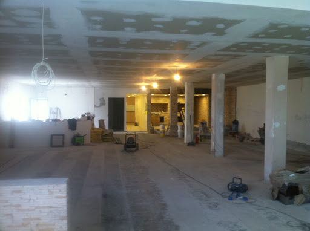

La señora
Andrea Marroquin, empezo a vender comida en un rinconcito de una esquina cerca de su casa. No tenia el
dinero necesario para comprar un terreno, asi que primero rento un puesto. Ha trabajado por 56 años en lo que
mas le gusta hacer, cocinar.
En el año 2000 construyo su propio negocio.
Doña Andrea Marroquin es una mujer reconocible en toda la ciudad por sus ricas comidas. "Restaurante Marroquin"
representa eso. Y ha sido un luar en donde la gente puede venir y disfrutar de la comida rica que se prepara.